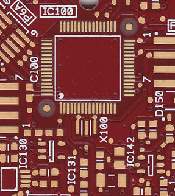
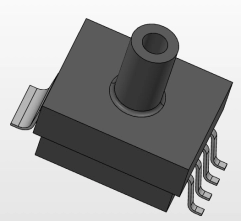
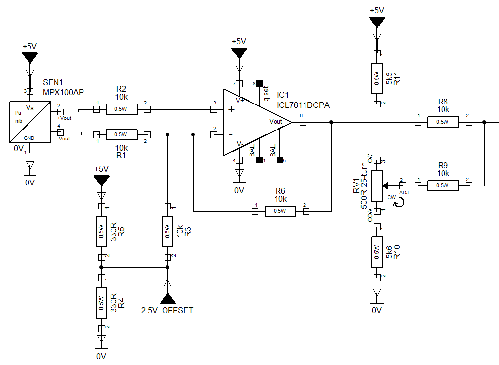

Printed Circuit Board and Computer Aided Design Bureau based in Swindon, Wiltshire.
Services offered
Design of Printed Circuit Boards including double-sided PTH, multilayer, flexible, and flexi-rigid boards. Portfolio of Past Designs. Technologies.

Section of a PCB layout
Library creation and maintenance to IPC-7351B, the upcoming IPC-7351C, or client’s design standards including Schematic Symbol, Component Footprint, 3D STEP model and Part. More information.
Creation of 3D Solidworks and STEP files for Electro-Mechanical Components.

3D Model created for NXP SOT1673-1 Case 1320a-02 MPAK
Creation and editing of schematic/circuit diagram data.

Example of a Schematic (Circuit) Diagram
Library creation and maintenance to IPC-7351B, the upcoming IPC-7351C, or client’s design standards including Schematic Symbol, Component Footprint, 3D STEP model and Part. More information.
Reverse Engineering of PCB Designs including importing of Gerber and Excellon data and creation of intelligent PCB CAD design and Schematic Diagram. More information.
Importing CAD design data and conversion into alternative formats. More information.
Creation and updating of PCB Design and drawing standards..
Consultation on PCB Design, Manufacturing, Assembly, Test, and Reliability issues.
Conversion of legacy Cadstar data (including Cadstar for DOS) into modern Cadstar revisions. More information.
Surveying and Cartography for Orienteering Competitions, Parks, and other purposes. More information.
PCB Fabrication and Assembly
We can liase with PCB Fabricators and PCB Assemblers if required to source populated prototype PCBs.
PCB Fabrication and Assembly
PCB Designer with over twenty years experience in PCB Design and Fabrication.
Twelve Years Experience using Pulsonix PCB CAD Design Software.
Experience in using Cadstar, Mentor Graphics PADS, SFX-RE, Altium Designer, Orcad, RS DesignSpark, EasyPC, Cadsoft Eagle, KiCAD for PCB layout and PCB Libraries for footprint creation.
Experience in using Autocad for 2D drafting.
Experience in using Solidworks for 3D modeling of Electromechanical components and assemblies.
Although based in Swindon and covering Wiltshire, Oxfordshire, Buckinghamshire, Berkshire, Somerset, Avon and Bristol, client location need not be an issue if working online. Previous clients have been based in Essex, UK and overseas in Canada, Germany and the United States.